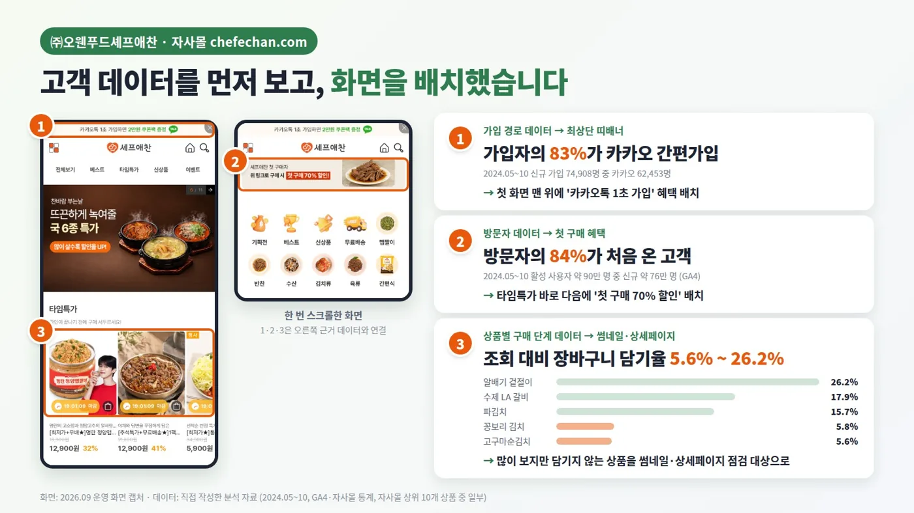
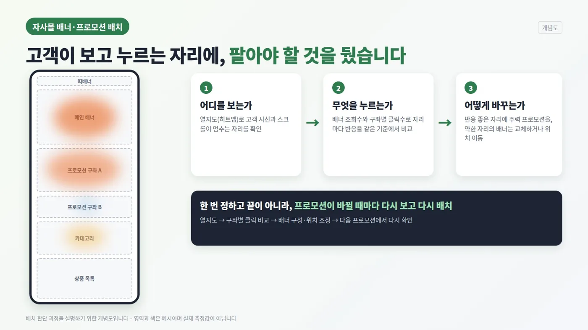
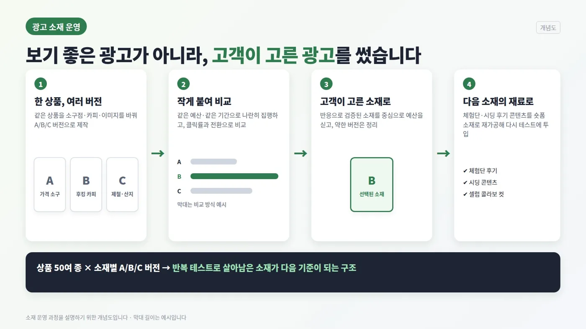
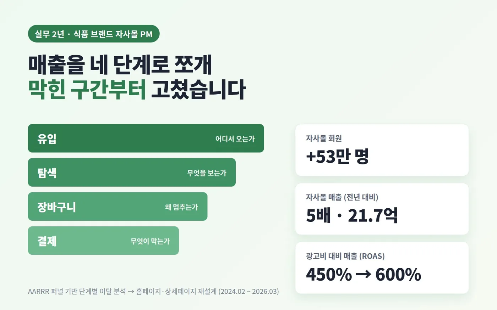
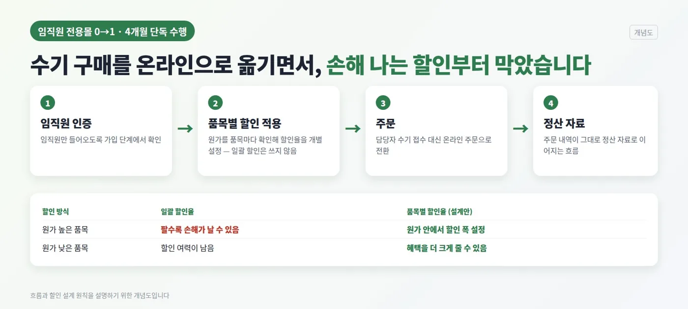

커머스 · 자사몰 PM
셰프애찬 자사몰 — 데이터로 메인 화면과 이벤트를 다시 짜다
식품 브랜드 자사몰에서, 감이 아니라 클릭과 테스트로 화면·소재·이벤트를 정한 2년의 기록
01처음 본 숫자
2024년 5~10월 가입·방문 데이터를 분석해 보니 신규 가입자의 83%가 카카오 로그인이었고, 방문자의 약 84%가 신규 방문이었습니다. 장바구니 담기율은 상품에 따라 5.6%에서 26.2%까지 크게 벌어져 있었습니다.
"처음 온 사람이 대부분이고, 무엇을 먼저 보여주느냐에 따라 담는 비율이 크게 달라진다"는 뜻이었습니다. 그래서 메인 화면을 첫 방문자가 길을 잃지 않는 화면이라는 기준으로 보았습니다.

① 메인 배치는 클릭이 정한다
- 문제
- 메인 배너와 프로모션 자리는 그때그때 "밀고 싶은 상품"으로 채워지고 있었습니다.
- 방법
- 열지도로 시선이 멈추는 구간을 보고, 배너 조회수와 구좌별 클릭수를 비교해 자리마다 성과를 매겼습니다.
- 결정
- 성과가 높은 구좌에 전환이 좋은 상품과 프로모션을 두고, 상세페이지 썸네일도 같은 기준으로 다시 기획했습니다. 메인 배치는 재직 중 직접 설계했습니다.

② 광고 소재는 고객이 고른다
- 문제
- 어떤 카피와 이미지가 좋은지 내부 의견이 자주 갈렸습니다.
- 방법
- 상품마다 A/B/C 버전 소재를 만들어 매체별로 동시에 집행하고, 반응이 좋은 소재만 남겼습니다. 이렇게 쌓인 소재가 50여 개입니다.
- 결정
- "우리가 좋아하는 소재"가 아니라 "고객에게 선택받은 소재"를 기준으로 삼았습니다.

02고객 단계마다, 다른 이벤트를
이벤트도 한 번에 모두를 부르는 대신, 고객이 지금 어느 단계에 있는지에 따라 다르게 설계했습니다.
| 단계 | 이벤트 | 노린 것 |
|---|---|---|
| 신제품 검증 | 미식연구소 — 신제품 연구원 100명 모집 (선착순 조기 마감) | 출시 전 실제 고객 반응과 포토리뷰 확보 |
| 구매 전환 | 대표가 직접 가격을 깎는 네고 특가 | 망설이는 첫 구매를 한 번 밀어 주기 |
| 재참여 | 고객 수 달성 기념 · 가정의 달 룰렛 | 이미 산 고객이 다시 들어올 이유 만들기 |
| 휴면 복귀 | 6개월 미방문 고객 대상 COMEBACK 15% 코드 | 떠난 고객을 좁게 골라 다시 부르기 |
03함께 만든 것들
이 밖에도 임직원몰을 처음부터 만들었고, 모델과의 콜라보 캠페인과 체험단·박람회를 기획·운영했습니다. 메타·구글·네이버·카카오 광고를 모두 운영하면서 팀 KPI를 세우고, 모든 업무를 대표에게 직접 보고했습니다.


04결과
재직하는 동안 회원이 53만 명 늘었고, 자사몰 매출은 5배가 되었습니다. 광고 ROAS는 450%에서 600%로 올랐습니다. 물론 제품과 팀 전체가 함께 만든 숫자이고, 제 몫은 그 숫자가 어디서 움직이는지 찾아 화면과 소재에 반영하는 일이었습니다.
05돌아보며 — 그래서 AI 과정을 선택했다
데이터로 화면을 고칠수록, "왜 이 숫자가 움직였는지"에 끝까지 답하지 못하는 순간이 늘었습니다. 클릭률은 볼 수 있었지만, 그 뒤의 이유를 모델로 설명하고 검증하는 방법은 몰랐습니다. 그 답을 찾으려고 퇴사 후 6개월 바이오메디컬 AI 과정을 선택했고, 지금은 두 경험을 합쳐 데이터로 흐름을 설계하는 기획을 하려고 합니다.
매출액과 매체별 ROAS 원자료는 회사 내부 데이터라 비율만 적었습니다. 광고 소재와 이벤트 페이지 원본은 회사 자산이라 여기에는 싣지 않았습니다.